集创赛记录（3）：理想模型搭建
Virtuoso常用快捷键：
Virtuoso常用快捷键
在 schematic 中：
按
i添加元器件，按p添加 pin ，按w连线，按l给线命名，按f自适应缩放按住鼠标左键画框：选择物体
按住鼠标右键画框：放大
按住鼠标中键：移到视角
选中器件按
q修改参数u撤销操作
Virtuoso 使用过程中可能遇到的问题：
Virtuoso 使用过程中可能遇到的问题
无法 edit View，只能 read
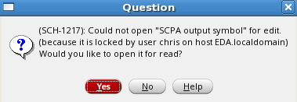
将该 View 所在文件夹中的以下这两个文件删掉
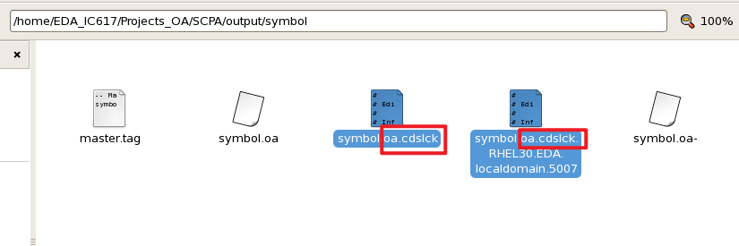
1. 设计思路
本次比赛许多内容参考该视频：基于RFIC-GPT射频芯片智能设计工具的SCPA（Switched-Capacitor Power Amplifier）设计分享
先完成理想模型的搭建、仿真；再逐步替换为 mos 模型、仿真；最后画版图，提取寄生参数，仿真。
架构选用 Doherty 架构。
总体框图：
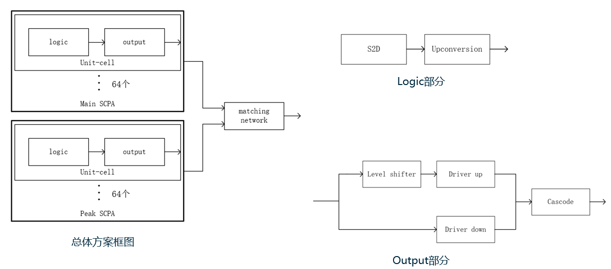
logic 模块的全部，以及 output 模块最后的电容前的部分都是数字信号，即方波
2. 理想模型的搭建
先使用 analogLib 中的理想模型搭建，对于一些设计库中没有的模块， 例如反相器、 与门和升压电路， 编写了 VerilogA 代码来实现这些功能。
由于权限问题，很多操作无法进行，所以先修改文件权限。
鼠标右键打开终端，输入 su - ，输入密码
chris 切换到 root 用户，输入
cd /home/EDA_IC617/Projects_OA ，输入
chmod a+w . 修改当前文件夹权限为所有人可读可写。
打开 Virtuoso，点击
Tools->Library Manager，打开库管理器。
新建一个库 SCPA，关联到工艺库 tsmcN65
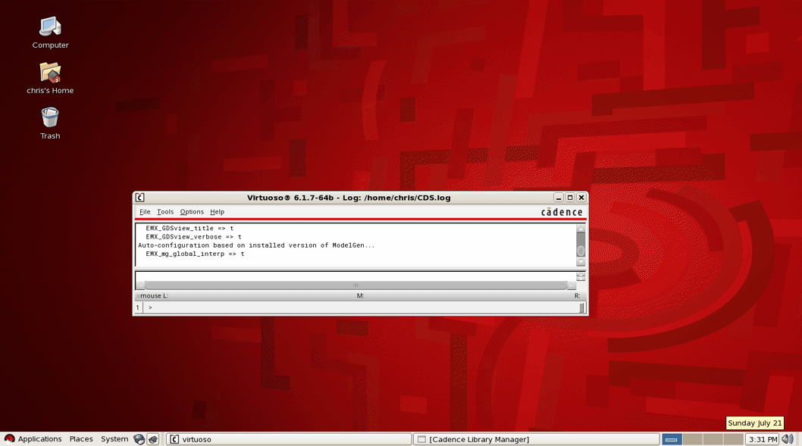
2.1. VerilogA 代码编写
编写反相器、 与门和升压电路的 VerilogA 代码
新建一个 Inv （反相器）的 cell
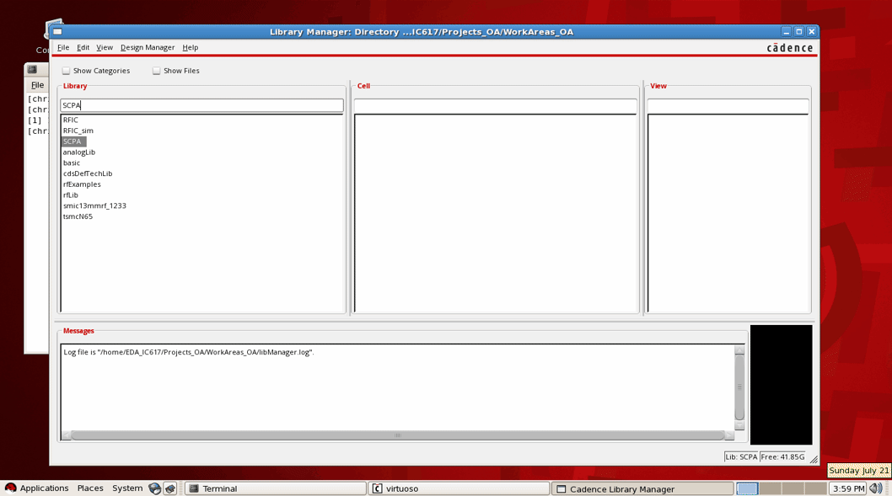
Inv的代码如下：
Inv的VerilogA代码
1 | // VerilogA for SCPA, Inv, veriloga |
vtrans、tdelay、trise、tfall、Vhigh、Vlow 这些参数可以在调用该模块时修改
同理新建与门和升压电路
与门和升压电路的 VerilogA 的代码如下
与门和升压电路的 VerilogA 的代码
1 | // VerilogA for SCPA, And, veriloga |
1 | // VerilogA for SCPA, Boost, veriloga |
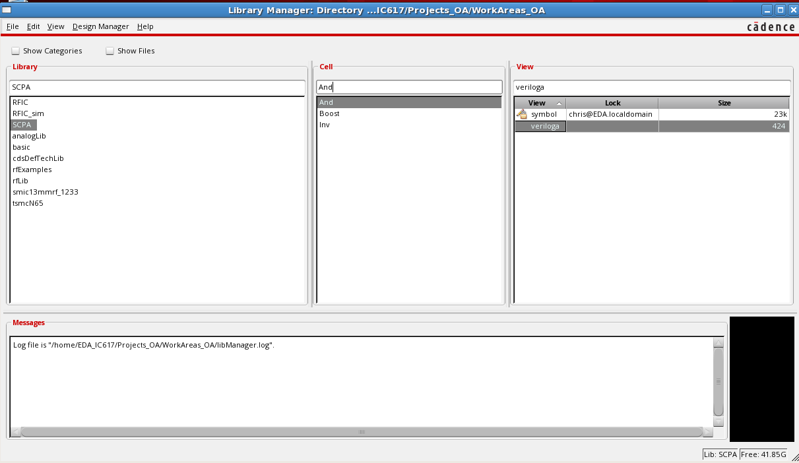
2.2. logic 部分
2.2.1. S2D
S2D 模块功能是将单端信号转为差分信号。
新建一个 S2D 的理想电路。（后续还会在该 Cell 下新建mos模型的电路 schematic_mos）
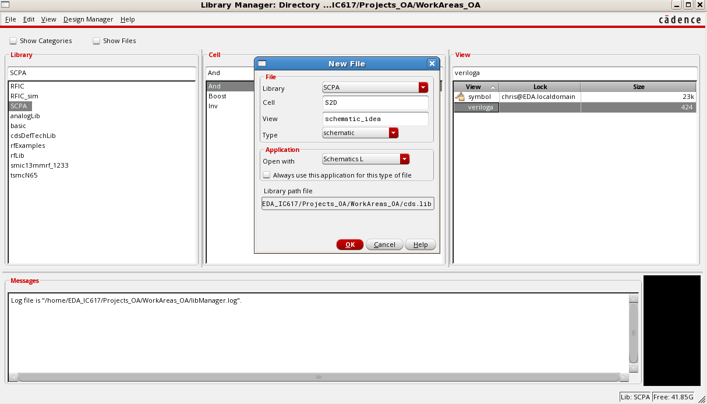
进入 schematic，按 i 添加元器件，按 p 添加
pin ，按 w 连线，按 l 给线命名，按
f 自适应缩放
修改后需要保存，点击左上角工具栏的第三个，Check and Save
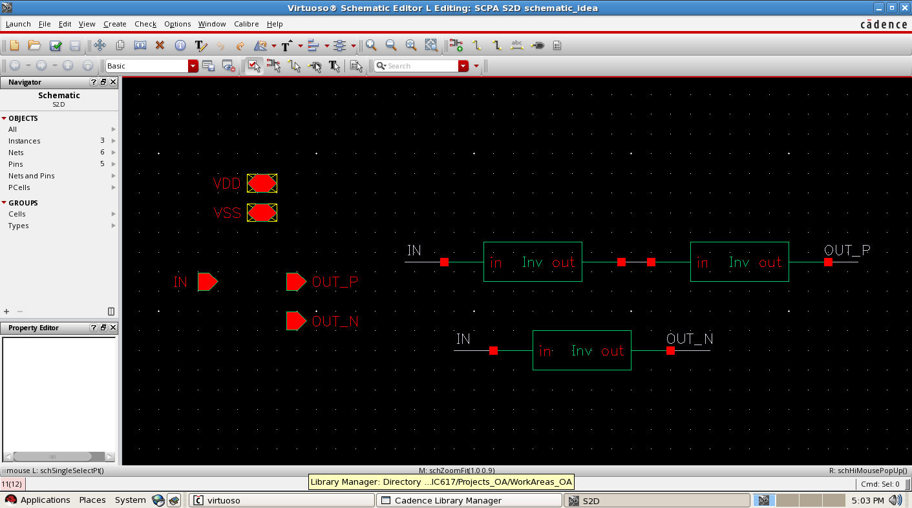
选中 Inv 按 q，修改参数，所有 Inv 都要改。因为这里的 VDD
和 VSS 是 1.2V 和 0，所以改成如下参数。
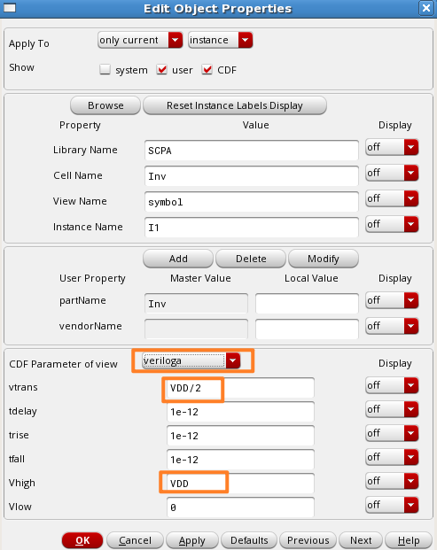
然后从 schematic 生成 symbol：
Create → Cellview → From CellView...
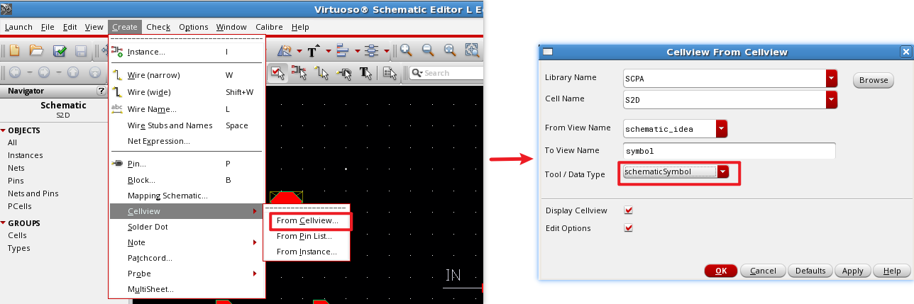
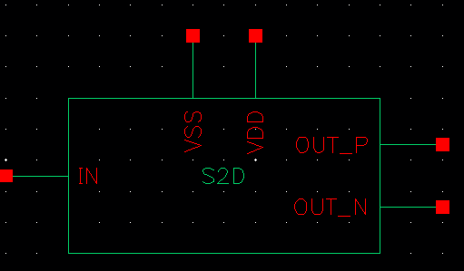
同理搭建其他模块，注意正确修改参数设置。
2.2.2. upconversion
该模块将使能信号上变频
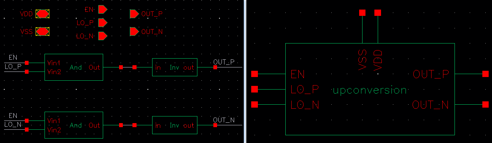
2.2.3. logic
将 S2D 和 upconversion 合并。
这不是一个底层模块了，不分理想模型还是 mos 模型，所以只需一个 schematic 即可。
仿真时要切换理想模型或 mos 模型是切换底层的模型。
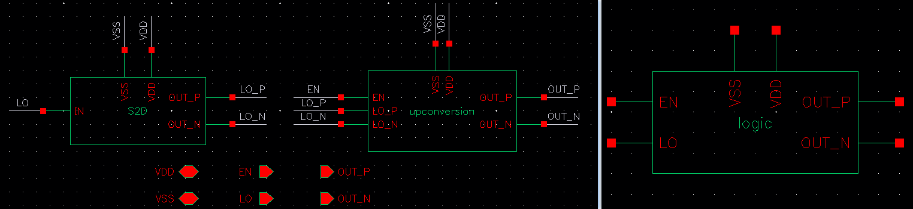
2.3. output 部分
output 部分由 4 个部分组成：Level
2.3.1. level_shifter
该模块将 0 ~ VDD 的信号抬升到 VDD ~ VDD2
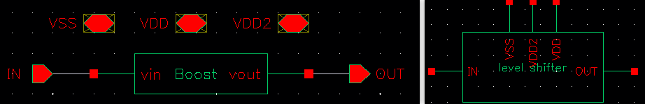
2.3.2. driver up
该模块将信号在 VDD 和 VDD2 之间反相。
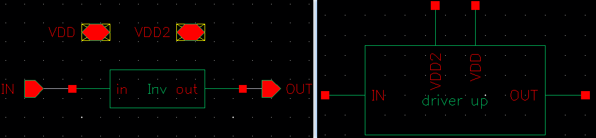
2.3.3. driver down
该模块将信号在 VSS 和 VDD 之间反相。
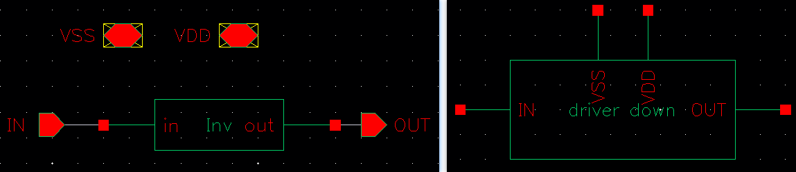
2.3.4. inv cascode
输出为 0 ~ VDD2 的方波
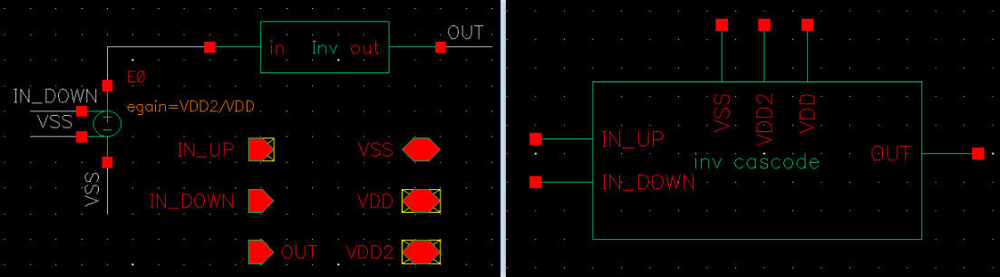
E0 为 analogLib 下的 vcvs：
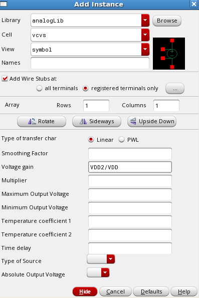
2.3.5. output
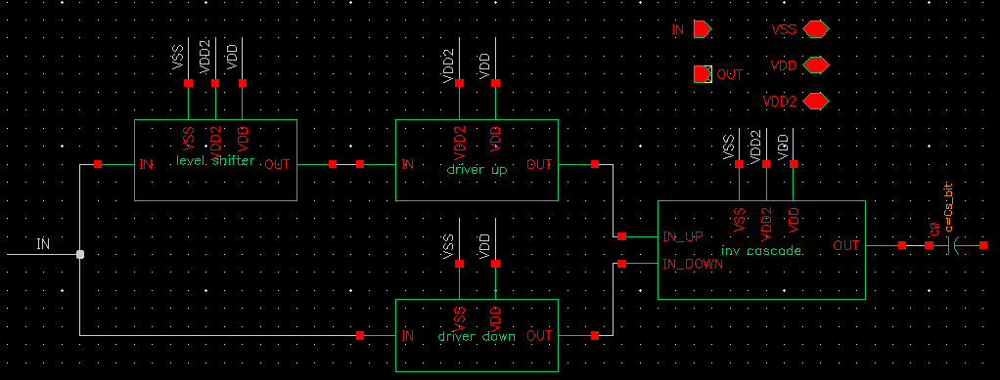
电容是 analogLib 下的 cap：
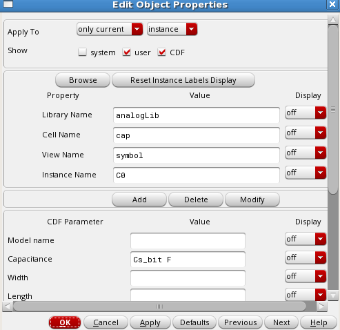
2.4. unit cell
一个 logic 部分和两个 output 组成一个 unit cell
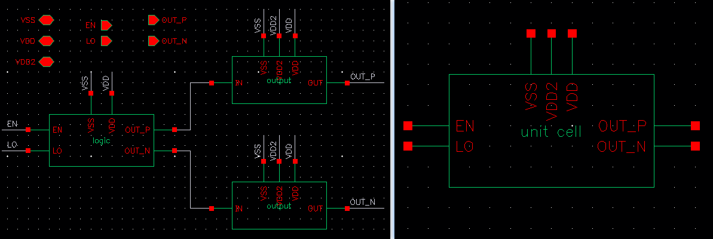
2.5. SCPA
64 个 unit cell 组成一个 SCPA
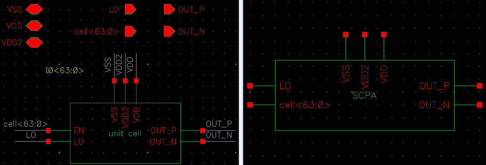
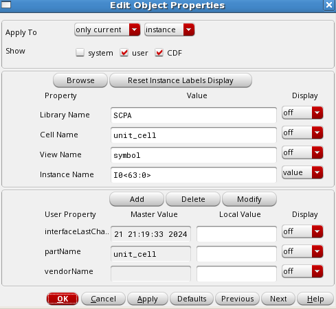
2.6. Doherty SCPA
两个 SCPA 分别作为主路和峰值路，加上匹配电路组成 Doherty SCPA
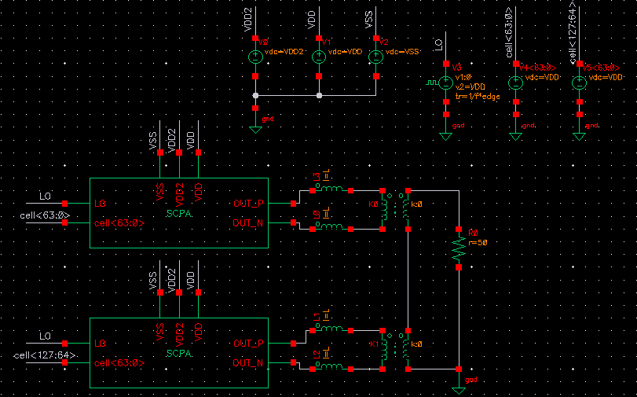
其中一些器件的参数：
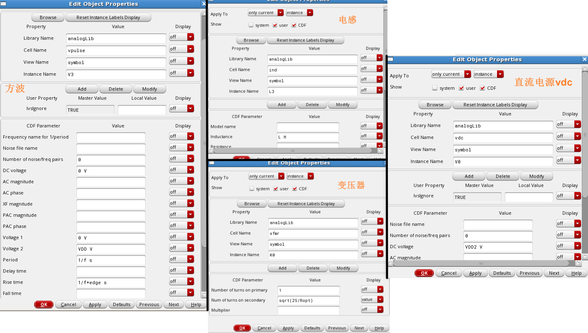